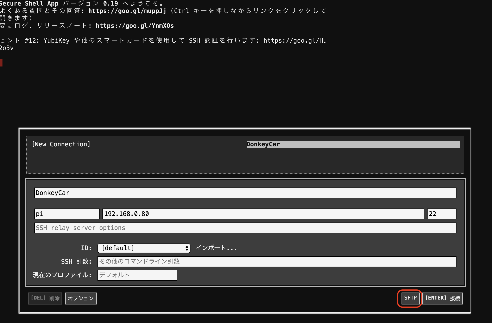
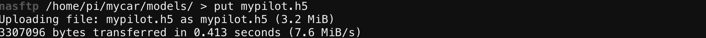
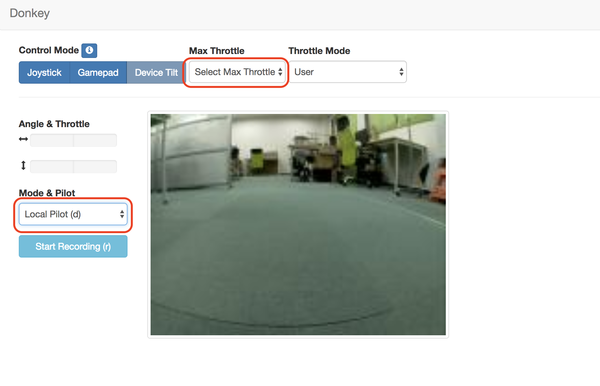

自動走行

mypilot.h5をRaspberry Pi3へ移動
SFTPでRaspberry Pi3側の/home/pi/mycar/modelsフォルダにアップロードします。

SFTPで、学習済みモデルをアップするフォルダに移動します。
1 | |

SFTPで学習済みモデル mypilot.h5をアップロードします。
1 | |

学習済みモデルでDonkeyCarを動かす(Raspberry Pi3)
SSHで、Raspberry Pi側にログインし、mycarフォルダに移動します。
1 | |
アップロードしたモデルを指定してDonkeyCarを指導します。
1 | |
DonkeyCarに、Webサーバが立ち上がりWebConsoleが起動します。WebConsoleへのアクセスは、DonkeyCarのIPアドレス:8887でChromeで接続します。
DonkeyCarのIPアドレスがわからない場合は、ifconfigでwlan0のIPアドレスを調べます。
カメラ準備が完了するまで待機
Webカメラの準備が完了する前にWebブラウザにアクセスすると、エラーで落ちる場合があります。その場合は自動走行のコマンドを実行後、ターミナルログをみてカメラの準備が完了してからWebブラウザにアクセスしてください。
カメラの準備が完了すると、ターミナルログにはカメラの解像度に関する情報が表示されます。
学習済みモデルの呼び出し自動走行
Web画面のmode & pilotの部分を、Local Pilot (d)に変更するとmypilot.h5を使った自動走行が始まります。

学習済みモデルでの走行を停止するには、Web画面のmodel & pilotから、User (d)を選びます。
SSHのRaspberry PiのTerminalで、CTRL+cでコマンドを終了し、DonkeyCarを停止します。